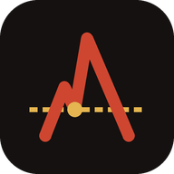

Aatrox Capital
Rules-based scorecard
Dashboard
Scores, swing setups, every-holding scan
›
Trading 212 sync
Run it now from GitHub Actions
›
Signal log
Week-by-week signal changes
›
Trading 212
Open your account
›
Repository
Engine, runbook, data
›